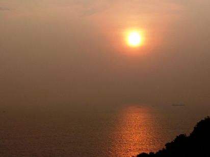
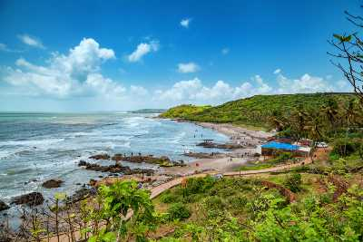
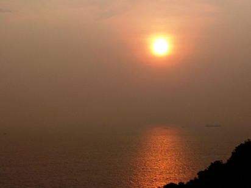
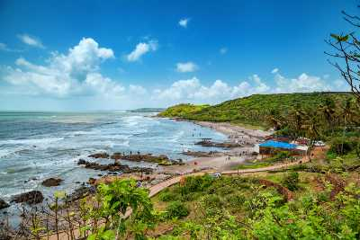

About Aguda Fort
The Aguada Fort, located in Goa, India, stands as a testament to the region's rich history and strategic importance. Perched atop a hill overlooking the Arabian Sea, this imposing fortress is one of the most iconic landmarks in Goa, offering visitors a glimpse into the colonial past of the region. Constructed in the early 17th century by the Portuguese, the fort was originally built to defend against enemy attacks and safeguard the territory's maritime trade routes.
The name "Aguada" translates to "water" in Portuguese, a reference to the freshwater spring within the fort complex that provided a vital source of water to passing ships during the Portuguese era. Today, the Aguada Fort attracts tourists and history enthusiasts alike, drawn by its stunning architecture, panoramic views, and historical significance. The massive walls, bastions, and ramparts of the fort bear witness to its military prowess, while the lighthouse perched atop the bastion offers breathtaking views of the surrounding coastline.

 


